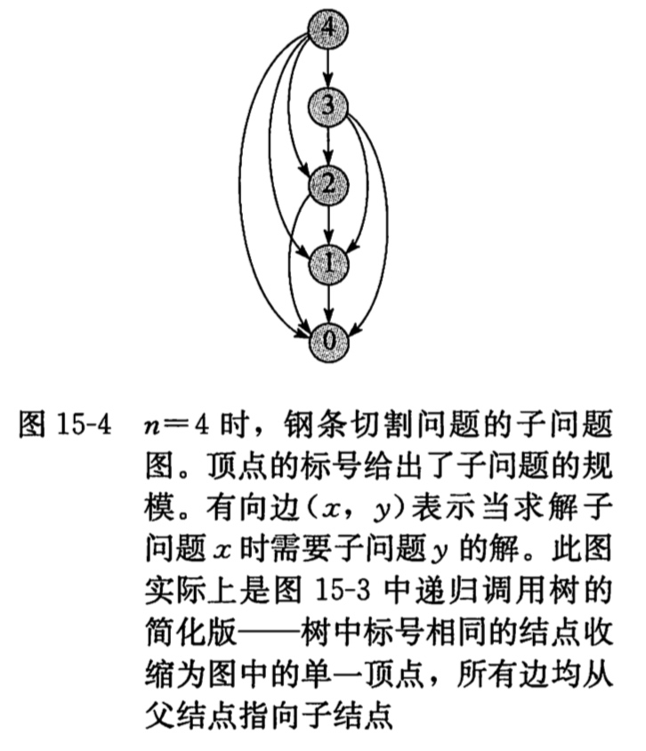

常见iOS面试题（智力题）
-
智力题
- 四个人夜间要过一座桥，每人走路速度不一样，过桥需要时间分别是1，2，5，10分钟。现在只有一只手电筒在过桥时必须带，同时只能两人过，如何安排能够让四人最快速度过桥？
- 有25匹马赛跑，每次只能跑5匹，最快能赛几次找出跑得最快的3匹马？
- 如果你变成硬币那么小，然后被扔进一个搅拌机里，你将如何脱身？
- 五个强盗抢到100个金币来分赃，强盗1提出分配方案，为了防止他分配不公，强盗们达成一致：他的方案必须有所有人（包括1号自己）的半数以上（注意，必须大于百分之五十）通过才可执行。否则，他将被杀死，再由2号强盗提出分配方案，2号的方案也要所有剩下的人（包括他自己）的半数以上通过。否则他也将被杀死，依次类推。假设这五个强盗都贪婪成性、残忍无比、绝顶聪明而又一诺千金，都想自己得到最多，都想看到别人死去而自己活。请问，1号强盗要怎样分配才能使自己活着而得到的黄金最多？为什么？
智力题
四个人夜间要过一座桥，每人走路速度不一样，过桥需要时间分别是1，2，5，10分钟。现在只有一只手电筒在过桥时必须带，同时只能两人过，如何安排能够让四人最快速度过桥？
答：1和2 先过。1返回，5和10先过，2返回，1和2一起过。一共时间=2+1+10+2+2=17分钟
有25匹马赛跑，每次只能跑5匹，最快能赛几次找出跑得最快的3匹马？
答案是7次。
1. 首先将25匹马分成5组a、b、c、d、e进行比赛。比赛的次数就是5次。得到每组的第一名，分别编号a1,b1,c1,d1,e1。
2. 然后我们将每组的第一名进行比赛，得出结果。假设a1>b1>c1>d1>e1。（大于号表示a1比b1快，1表示第一名）。在这个地方我们可以推断出，a1是所有马中最快的，所以它是第一名。d1,e1不可能是前三的马，同时这两匹马所在的组也不可能是前三的马。所以排除这两组马，还剩三组15匹马。现在需要找出第二快和第三快的马。
3. 第二名和第三名的马在刚才的比赛中有以下几种分布情况：
全部在a组（最快的马所在的组），那么它是a2和a3.
全部在b组，那么它们就是b1和b2。
一匹在a组一匹在b组，那么它们是a2和b1.无论是第三名在a组还是第二名在a组都是这两匹。
一匹在a组一匹在c组，那么它们是a2和c1。
一匹在b组一匹在c组，那么它们是b1和c1。
所以我们把a2,a3,b1,b2,c1拿出来再进行一场比赛。取前两名就是最终的结果。
如果你变成硬币那么小，然后被扔进一个搅拌机里，你将如何脱身？
这是Google的面试题，原题大概是：
你被缩小到一枚硬币大小，密度不变质量减小，被扔进一个搅拌机里，搅拌机60秒后开始转动，你会怎么办？
答案是：直接跳出来就可以了
五个强盗抢到100个金币来分赃，强盗1提出分配方案，为了防止他分配不公，强盗们达成一致：他的方案必须有所有人（包括1号自己）的半数以上（注意，必须大于百分之五十）通过才可执行。否则，他将被杀死，再由2号强盗提出分配方案，2号的方案也要所有剩下的人（包括他自己）的半数以上通过。否则他也将被杀死，依次类推。假设这五个强盗都贪婪成性、残忍无比、绝顶聪明而又一诺千金，都想自己得到最多，都想看到别人死去而自己活。请问，1号强盗要怎样分配才能使自己活着而得到的黄金最多？为什么？
显然，5号是最不合作的，因为他没有被扔下海的风险，从直觉上说，每扔下去一个，潜在的对手就少一个；4号正好相反，他生存的机会完全取决于前面还有人活着，因此此人似乎值得争取；3号对前两个的命运完全不同情，他只需要4号支持就可以了；2号则需要3票才能活，那么，你…… 思路对头，但是太笼统了，不要忘了我们的假设前提：每个人都十足理性，都不可能犯逻辑错误。所以，你应该按照严格的逻辑思维去推想他们的决定。让我们从后往前推理：5号不用说了，他的策略最简单：巴不得把所有人都送去喂鲨鱼(但要注意：这并不意味着他要对每个人投反对票，他也要考虑其他人方案通过的情况)。来看4号：如果1～3号强盗都喂了鲨鱼，只剩4号和5号的话，5号一定投反对票让4号喂鲨鱼，以独吞全部金币。所以，4号惟有支持3号才能保命。
3号知道这个策略，就会提(100，0，0)的分配方案，对4号、5号一毛不拔而将全部金币归为己有，因为他知道4号一无所获但还是会投赞成票，再加上自己一票他的方案即可通过。不过，2号推知到3号的方案，就会提出(98，0，l，1)的方案，即放弃3号，而给予4号和5号各1枚金币。由于该方案对于4号和5号来说比在3号分配时更为有利，他们将支持他而不希望他出局而由3号来分配。这样，2号将拿走98枚金币。不过，2号的方案会被l号所洞悉，l号并将提出(97，0，1，2，0)或(97，0，1，0，2)的方案，即放弃2号，而给3号1枚金币，同时给4号或5号2枚金币。由于l号的这一方案对于3号和4号(或5号)来说，相比2号分配时更优，他们将投l号的赞成票，再加上1号自己的票，1号的方案可获通过，97枚金币可轻松落入腰包。这无疑是1号能够获取最大收益的方案了！


动态规划
动态规划与分治法很类似，都是通过组合子问题的解来求解原问题。但是不同的是动态规划应用于子问题重叠的情况,即不同的子问题也具有公共的子子问题。分治法在这种情况下，会反复的求解那些公共子子问题。而动态规划算法对每个子子问题只求解一遍，将其保存在一个表格中，避免每次都计算。
钢条切割问题
我们第一个动态规划问题是钢条切割问题。

分治法
我们来先看一下简答的分治法：
//
// main.m
// CUT-ROD
#import <Foundation/Foundation.h>
@interface CUT_ROD:NSObject;
-(NSInteger)CUT_ROD:(NSArray*)P length:(NSInteger)n;
@end
int main(int argc, const char * argv[]) {
@autoreleasepool {
NSArray *c = @[@1,@5,@8,@9,@10,@17,@17,@20,@24,@30];
CUT_ROD *a = [CUT_ROD new];
NSInteger result = [a CUT_ROD:c length:10];
NSLog(@"result is %ld",result);
}
return 0;
}
@implementation CUT_ROD
//简单的分治法,会重复计算子子结果
-(NSInteger)CUT_ROD:(NSArray *)P length:(NSInteger)n{
if (n==0) {
return 0;
}
NSInteger q = -1;
for (NSInteger i=0; i<n; i++) {
q = q>([P[i] integerValue]+[self CUT_ROD:P length:n-i-1]) ? q:([P[i] integerValue]+[self CUT_ROD:P length:n-i-1]);
}
return q;
}
@end
上述代码使用递归来实现的，但是每次都要递归的重复来计算相同的子子问题，如图所示：

所以我们就在想，只要把求解得到的子子问题答案记录下，等到下次要用的时候直接调用它，就可以省下大量的时间。所以我们下面采用动态规划来写一遍。
动态规划
动态规划是一个典型的时空权衡的例子，付出额外的内存空间来降低计算时间。
第一种方法：带备忘的自顶向下算法
//动态规划 带备忘的自顶向下
-(NSInteger)MEMOIZED_CUT_ROD:(NSArray *)P length:(NSInteger)n{
NSMutableArray *logArr =[[NSMutableArray alloc] initWithCapacity:11];
for (int i = 0; i<=10; i++) {
[logArr addObject:@(-1)];
}
return [self MEMOIZED_CUT_ROD_AUX:P length:n log:logArr];
}
-(NSInteger)MEMOIZED_CUT_ROD_AUX:(NSArray*)p length:(NSInteger)n log:(NSMutableArray*)r{
NSInteger q;
if ([r[n] integerValue]>=0) {
return [r[n] integerValue];
}
if (n==0) {
q = 0;
}else{
q = -1;
for (NSInteger i = 0; i<n; i++) {
q = q>[p[i] integerValue] + [self MEMOIZED_CUT_ROD_AUX:p length:n-i-1 log:r] ? q : [p[i] integerValue] + [self MEMOIZED_CUT_ROD_AUX:p length:n-i-1 log:r];
}
}
[r replaceObjectAtIndex:n withObject:@(q)];
return q;
}
MEMOIZED_CUT_ROD方法引入r数组，记录每个长度的最优收益值，下面的方法将记录的值存入r数组中，并调用存入r的子子问题所得到收益值。
第二个方法，字底向上版本，这个版本更为简单：
-(NSInteger)BOTTOM_UP_CUT_ROD:(NSArray *)P length:(NSInteger)n{
NSMutableArray *arrLog = [[NSMutableArray alloc] initWithCapacity:11];
for (int i = 0; i<=10; i++) {
[arrLog addObject:@(0)];
}
NSInteger q = -1;
for (int j=0; j<n; j++) {
q = -1;
for (int i=0; i<=j; i++) {
NSLog(@"%li",q);
q = q > ([P[i] integerValue] + [arrLog[j-i] integerValue]) ? q : ([P[i] integerValue] + [arrLog[j-i] integerValue]);
NSLog(@"%li",q);
}
[arrLog replaceObjectAtIndex:j+1 withObject:@(q)];
}
return [arrLog[n] integerValue];
}
依次来求解长度从1到n的最大收益。
总结
当我们思考一个动态规划的问题时，最好弄清涉及的子问题与他们的依赖关系。如上图的依赖图为：



使用Masonry框架来构造iOS布局
之前一直都是在使用storyboards来创建iOS布局，突然某一天看到使用代码布局后，界面元素的清晰易懂，就迷上了。。。
所以这次简单学习一下使用Masonry帮助构建iOS界面元素。
在阅读了Masonry的github主页之后，学习并安装了框架。
框架的安装
安装框架非常简单，我们只需要在podfile中加上下面一句：
pod 'Masonry'
之后为了语法的缩写以及代码自动补全我们来创建Code Snippets
mas_make -> [<#view#> mas_makeConstraints:^(MASConstraintMaker *make) { <#code#> }];
mas_update -> [<#view#> mas_updateConstraints:^(MASConstraintMaker *make) { <#code#> }];
mas_remake -> [<#view#> mas_remakeConstraints:^(MASConstraintMaker *make) { <#code#> }];
将上述语句放到~/Library/Developer/Xcode/UserData/CodeSnippets中，之后我们在写相关代码的时候就会有代码提示了。
我们在要使用Masonry的文件要频繁的导入"Masonry.h"头文件，所以为了方便，我们创建一个Supporting Files文件夹，并在其中创建一个prefix.pch文件。文件内容为：
//
// MBMasonry-Prefix.pch
#import <Availability.h>
// Include any system framework and library headers here that should be included in all compilation units.
// You will also need to set the Prefix Header build setting of one or more of your targets to reference this file.
#ifndef __IPHONE_3_0
#warning "This project uses features only available in iOS SDK 3.0 and later."
#endif
#ifdef __OBJC__
#import <UIKit/UIKit.h>
#import <Foundation/Foundation.h>
#import <QuartzCore/QuartzCore.h>
//define this constant if you want to use Masonry without the 'mas_' prefix
// 只要添加了这个宏，就不用带mas_前缀
#define MAS_SHORTHAND
//define this constant if you want to enable auto-boxing for default syntax
// 只要添加了这个宏，equalTo就等价于mas_equalTo
#define MAS_SHORTHAND_GLOBALS
//在这里导入头文件。
#import "Masonry.h"
#endif /* MBMasonry_Prefix_pch */
之后我们在使用的时候，就不用每个文件都导入一遍头文件了。
使用方法
原声的iOS代码，对界面布局使用的是NSLayoutAttribute，用了Masonry后，我们使用封装好的MASViewAttribute。具体的属性等价关系如下图所示：

我们来举例说明一下，假入我们想要创建一个登陆界面。界面中要有Name和Pass两个TextField，并对应两个Label。
那么我们可以按照如下方式来写：
//
// ViewController.m
// FirstRAC
//
// Created by 梁中豪 on 2017/10/17.
// Copyright © 2017年 梁中豪. All rights reserved.
//
#import "ViewController.h"
@interface ViewController ()
@property(nonatomic,strong) UIView *login;
@property(nonatomic,strong) UILabel *nameLabel;
@property(nonatomic,strong) UILabel *passLabel;
@property(nonatomic,strong) UITextField *name;
@property(nonatomic,strong) UITextField *pass;
@end
@implementation ViewController
- (void)viewDidLoad {
[super viewDidLoad];
self.login = [[UIView alloc] initWithFrame:CGRectZero];
_name = [[UITextField alloc] init];
_name.borderStyle = UIFontWeightBold;
_name.font = [UIFont systemFontOfSize:15];
_name.placeholder = @"Enter Name";
[_login addSubview:_name];
_pass = [[UITextField alloc] init];
_pass.borderStyle = UIFontWeightBold;
_pass.font = [UIFont systemFontOfSize:15];
_pass.placeholder = @"Enter Pass";
[_login addSubview:_pass];
_nameLabel = [[UILabel alloc] init];
_nameLabel.backgroundColor = UIColor.whiteColor;
_nameLabel.font = [UIFont systemFontOfSize:14.0];
_nameLabel.lineBreakMode = NSLineBreakByTruncatingTail;
_nameLabel.text = @"Name";
[_login addSubview:_nameLabel];
_passLabel = [[UILabel alloc] init];
_passLabel.backgroundColor = UIColor.whiteColor;
_passLabel.font = [UIFont systemFontOfSize:14.0];
_passLabel.lineBreakMode = NSLineBreakByTruncatingTail;
_passLabel.text = @"Pass";
[_login addSubview:_passLabel];
[self.view addSubview:_login];
[self buildElem];
}
//为所创建的控件，创建约束
- (void)buildElem{
[_login mas_makeConstraints:^(MASConstraintMaker *make){
make.left.right.and.bottom.equalTo(self.view);
make.top.equalTo(self.mas_topLayoutGuide);
}];
[_nameLabel mas_makeConstraints:^(MASConstraintMaker *make){
make.top.equalTo(_login.top);
make.height.equalTo(@20);
make.left.equalTo(_login.left).with.offset(20);
}];
[_passLabel mas_makeConstraints:^(MASConstraintMaker *make){
make.top.equalTo(_nameLabel.bottom).with.offset(10);
make.centerX.equalTo(_nameLabel.centerX);
make.height.equalTo(@20);
}];
[_name mas_makeConstraints:^(MASConstraintMaker *make){
make.left.equalTo(_nameLabel.right).with.offset(5);
make.centerY.equalTo(_nameLabel.centerY);
make.height.equalTo(@20);
}];
[_pass mas_makeConstraints:^(MASConstraintMaker *make){
make.left.equalTo(_passLabel.right).with.offset(5);
make.centerY.equalTo(_passLabel.centerY);
make.height.equalTo(@20);
}];
}
- (void)didReceiveMemoryWarning {
[super didReceiveMemoryWarning];
// Dispose of any resources that can be recreated.
}
@end
从上面可以看到，我们为元素创建了约束。当然这只是基本的方法。还有更多的API接口可以使用。我们这里就不在过多说明了。
大概知道上面的用法，我们就可以开心的撸代码写界面去了。
:smile:smile:smile:smile:smile:smile:smile:

Copyright © 2017 Powered by LZH, Theme used GitHub CSS.